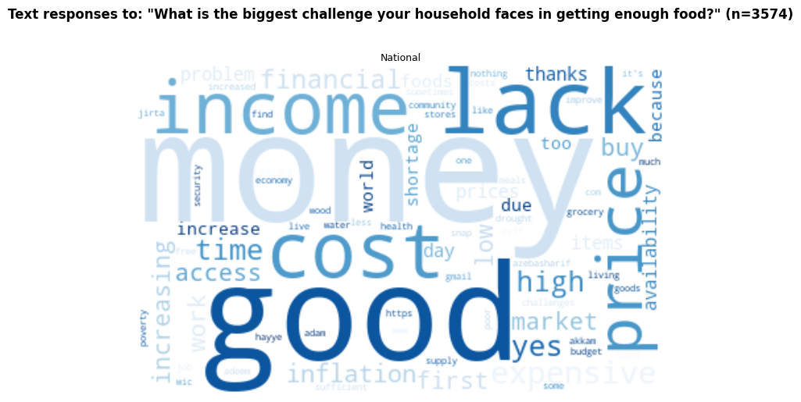
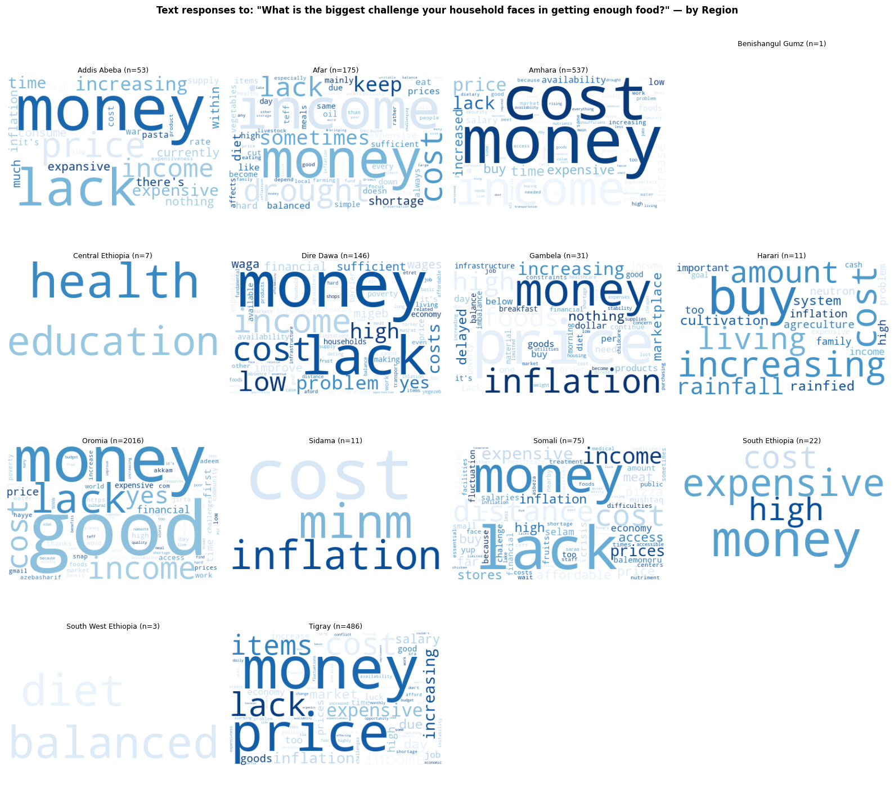

Food Availability in Your Community Survey (June 2025 – Nov 2025)#
Data source: Premise AEGIS for Humanitarian Needs — Ethiopia. Responses collected June 2025 through December 2025 via the Food Availability in Your Community survey module.
Methodology#
Survey questions#
Questions are grouped into six thematic sections: Food Availability, Food Access, Food Shortage, Food Price, Food Affordability, and Open Ended. The groupings follow the survey instrument structure and are defined in the code as named lists.
Response percentages#
All bar charts show the percentage of respondents who selected each response category in a given month — not raw counts. The denominator is the total number of unique respondents per month (or per month, per region for regional charts). Percentages therefore sum to 100% within each month for single-select questions.
Regional breakdown#
Each survey submission is spatially joined to Ethiopia’s administrative Region boundaries using the recorded GPS coordinates (observation_lat / observation_lon). Submissions that fall outside any region boundary are excluded from regional charts. Region subplot labels show the average number of respondents per month in brackets, e.g. Oromia (45).
Food Availability#
Which foods are less available? (top 5, multi-select)#
“Which foods are less available?” allows respondents to select multiple items (delimited by , or ^). Percentages for this question represent the share of respondents who mentioned each food item and can sum to more than 100%. Only the top 5 most-mentioned food items (by total frequency across all months) are shown.
Fish, Meat, Eggs, Milk and Fruit are the top 5 responses of which foods are less available. Almost everyone said one of these was not avilable in October in Addid Ababa, which dropped very quickly in November. It may be important to note that Ethiopia’s inflation also eased in October 2025.
In Oromia, A lot more reposndants said staples were not avilable in Sep 2025
Has food availability changed where you usually shop?#
There are three potential responses to this - About the same, improved and worsened.
Over the 6 months of 2025, more people have said ‘it remained the same’ in October and November. However, specifically in Addis, more people have said it worsened towards the later part of the year. A similar trends is seen in Somali.,
There is a reduction in % of people who said the situation worsened in Afar, Amhara, Oromia (with the highest respondants). In Amahara people reported that the situation has increased.
Food Access#
How many meals does your household usually eat each day?#
Nearly 50% of people eat 3 meals a day in the country, with 9-13% reporting they eat just one meal. Oromia has the most repondants who said they have just 1 meal (13-26%).
Where did your household get most of its food?#
Nearly 40–43% of respondents reported accessing food from markets. Tigray has one of the highest market access responses (67%).
Fewer people reported growing their own food towards the end of the year (22%) compared to the start (26.9%). This decrease is most pronounced in Addis Ababa (57% → 12.5%).
question = "Where did your household get most of its food?"
national_chart = create_stacked_percentage_chart(df=df, question_col=question, width=700, height=300)
regional_chart = create_stacked_percentage_chart(df=df, question_col=question, region_mapping=submission_to_region, facet_width=150)
display(alt.vconcat(national_chart, regional_chart).resolve_scale(color='shared'))
How long does it take you to get there from where you live, if walking?#
30% of respondents reported accessing food from places more than 20 minutes walking distance in November 2025, up from 23% in October 2025.
In Addis Ababa, by November 2025 most people reported travelling more than 20 minutes on foot to access food.
Food Shortage#
In the past 7 days, did any members of your household go to bed hungry?
In the past 7 days, was there ever no food of any kind in your household due to lack of money or resources?
In the past 7 days, how often did your household reduce portion sizes at meals?
In the past 7 days, how often did your household skip meals entirely?
In the past 7 days, how often did adults reduce their food so children could eat?
In the past 7 days, how often did your household limit food variety due to cost?
Food Price#
Is your household buying more or less food than one month ago?
Has the price of food changed in the past month where you usually shop?
Food Affordability#
Can your current income meet your household’s basic food needs?
Have you sold household items or assets to buy food in the past month?
Have you borrowed money or food in the past month to meet food needs?
How would you rate your household’s ability to access sufficient food?
Do you expect your food situation to improve or worsen in the next month?
food_affordability
["Can your current income meet your household's basic food needs?",
'Have you sold household items or assets to buy food in the past month?',
'Have you borrowed money or food in the past month to meet food needs?',
"How would you rate your household's ability to access sufficient food?",
'Do you expect your food situation to improve or worsen in the next month?']
Open Ended#
Free-text responses to “What is the biggest challenge your household faces in getting enough food?” are translated from Amharic to English using the Google Translate API (via deep-translator). After translation, responses are tokenised, common stopwords and question-specific terms are removed, and word frequencies are visualised as word clouds — nationally and per region. The response count n is shown in each title.


Oromia Story#
More than 50% of repondants from Oromia consistently responded to be missing meals/not have food/reduce portion sizes atleast 1-3 times in the past week. This indicates a shortage of food, or access to food. Nearly 50% of the respondants also said the availability of food where they shop ‘remain the same’, which could indicate that the availability was low from an earlier time. More than 50% also consistently reported having less than 3 meals a day. Nearly 20% of them grow their food at home, and 30-40% get it from a market. More than 50% of them have said the price of food has increased where they shop. However, interestingly, more than 50% of the repondants also said they’re buying more food than the previous motnhs for all the months for which data is available.
Regarding food affordability, more than 60% of them consistently said they sold household items to buy food in the past month, or borrowed money to do so. However, more than 60% have also said that they rate their access to food as ‘Good’ or ‘Very Good’
Monitoring repsonses to these questions from January - March 2026
Given Premise has provided restricted access of extracting their data for 2026, the below have been manually updated from their portal. These are responses to questions just for Oromia region from the periods Jan 1- Feb 28 and March 1 - Apr 26
In March-Apr 2026, lesser people have reported selling their items or borrowing money for food, but more people reported that the food is pricier, and that they cannot afford it. They also did not reported buying more food than before.